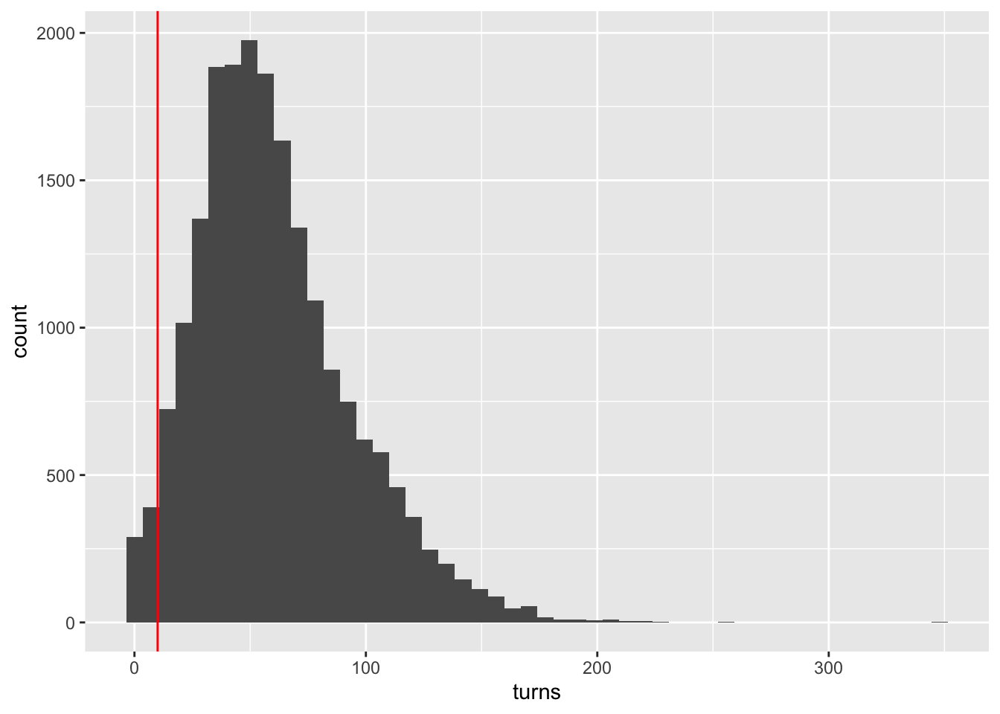

Chapter 3 Data transformation
3.1 Cleaning Trivial Variables
The dataset has the following variables.
## [1] "id" "rated" "created_at" "last_move_at"
## [5] "turns" "victory_status" "winner" "increment_code"
## [9] "white_id" "white_rating" "black_id" "black_rating"
## [13] "moves" "opening_eco" "opening_name" "opening_ply"We wanted to remove id, created_at, last_move_at, increment_code, moves, opening_eco, opening_ply since some of them, like id or increment_code do not have pivotal information for our problems. Or they are providing similar information as other variables, such as opening_eco.
The rest variables are:
## [1] "rated" "turns" "victory_status" "winner"
## [5] "white_id" "white_rating" "black_id" "black_rating"
## [9] "opening_name"3.2 Cleaning Rated Status
##
## False FALSE True TRUE
## 2048 1855 8723 7432We changed all the strings to uppercase letter for consistency.
##
## FALSE TRUE
## 3903 161553.3 Cleaning Turns

In this chess dataset, we assume that games which only have few turns are not meaningful since it is not usual to reach the final status by only few turns in a chess game.
As the plot shows, the majority of the games have turns over 10 so that we just directly deleted games whose number of turns are under 10.
3.4 Cleaning Users
For those players who only have played few games, their data may be outliers or cannot provide useful information for our analysis. Therefore, we keep the games played by users who only had played the chess game at least 3 times.
3.5 Cleaning Opening Names
##
## Sicilian Defense Queen's Pawn Game French Defense
## 452 221 198
## Ruy Lopez King's Pawn Game Italian Game
## 173 170 154
## English Opening Philidor Defense Caro-Kann Defense
## 138 115 104
## Scandinavian Defense Zukertort Opening Four Knights Game
## 97 80 71
## Scotch Game Queen's Gambit Declined Indian Game
## 68 66 61
## Van't Kruijs Opening Bishop's Opening Modern Defense
## 56 53 51
## Slav Defense Hungarian Opening
## 46 37The original opening names are really messy since some openings have very detailed explanation. By doing related research, we decided to use the more general definition of each opening for each game. This tidy version is more operable for visualization and conclusion.
3.6 Cleaned Dataset
## [1] 3393 9The cleaned dataset have 3393 observations and 9 variables.
| rated | turns | victory_status | winner | white_id | white_rating | black_id | black_rating | opening_name | |
|---|---|---|---|---|---|---|---|---|---|
| 4 | TRUE | 61 | mate | white | daniamurashov | 1439 | adivanov2009 | 1454 | Queen’s Pawn Game |
| 5 | TRUE | 95 | mate | white | nik221107 | 1523 | adivanov2009 | 1469 | Philidor Defense |
| 15 | FALSE | 31 | mate | white | shivangithegenius | 1094 | sureka_akshat | 1141 | Four Knights Game |
| 16 | FALSE | 43 | resign | black | sureka_akshat | 1141 | shivangithegenius | 1094 | Italian Game |
| 17 | FALSE | 52 | resign | black | shivangithegenius | 1094 | sureka_akshat | 1141 | Four Knights Game |
| 18 | FALSE | 66 | mate | black | sureka_akshat | 1141 | shivangithegenius | 1094 | Four Knights Game |